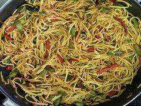

Chilli Baby Corn
Ingredients
For batter:
- 4 tbsp Flour
- 4 tbsp Cornstarch
- 1/2 tsp Salt
- 4 tbsp Water
- 20 Babycorn
- Oil for frying
For Sauce:
- 1 tbsp Oil
- 1/2 cup Spring Onion
- 2 tsp Finely chopped garlic
- 2 tsp Finely chopped garlic
- 2 to 3 green chilies – slit or sliced
- 1/3 cup Thinly sliced or finely chopped capsicum
- 1/3 cup Soya Sauce1 tsp Green chilli sauce
- 1/4 tsp Pepper
- 1 tsp SugarSalt as required
Method
- Rinse and dry the baby corn with kitchen towel.
Chop the baby corn in halves if they are larger in size or keep them whole if they are smaller.
- Prep the spring onions, garlic, green chillies, ginger, capsicum and set aside.
- Make a smooth and medium thick batter with the cornstarch (cornflour), all purpose flour, salt, pepper
and water.
- Heat the oil in a wok or frying pan. Dip each baby corn piece in the batter and coat it well with the
batter.
- Gently place the batter coated baby corn pieces in the hot oil. When one side firms up and is crispy,
light golden, turn over and
fry the second side
- Fry the baby corn till the edges and sides are golden brown turning over a couple of times with a
slotted spoon.
- Place the fried baby corn on kitchen paper towels.
For Sauce:
- In another pan or frying pan or wok, heat about 1 tablespoon oil. Or you could use the same pan
that was
used for frying the baby corn – keeping 1 tablespoon oil in it, remove the remaining oil with a
spoon.
- Add chopped spring onions, ginger, garlic and slit green chilies.
- Stir fry on a medium-high heat for 1 to 2 minutes. Now add the sliced capsicum (green bell pepper).
If
you do not have capsicum, you can skip it
- Stir-fry on medium-high heat for 3 to 4 minutes until the capsicum is half cooked. It should have some
crunch.
- Lower the heat to medium and add the soy sauce, sweet green chilli sauce or sweet red chilli sauce. Mix
well.
- Now sprinkle black pepper powder, salt and sugar. Mix again.
For Chilli Baby Corn
- Add the fried baby corn. Gently mix with the rest of the ingredients. You could stop here if you
prefer
a highly crispy and crunchy baby corn texture. But if you want a smooth glazed sauce coating on the
baby
corn then proceed to the following steps.
- Add 2 to 3 tablespoons water and mix again. To give a glaze and smoothness in the dish, sprinkle
about 1 teaspoon of cornstarch (cornflour).
- Mix well and cook for 1 to 2 minutes or more till the cornstarch has cooked. Check the taste and
add
salt, pepper or soy sauce if required.
- Serve the baby corn garnished with some spring onion greens or chopped celery.
- You can serve chilli baby corn as a starter snack or with bread or as a side with stir fried noodles or
fried rice.
Momo Manchurian

Ingredients
- 2 tbsp Soya sauce
- 2 tbsp Vinegar
- 1/2 tbsp Black pepper powderSalt to taste
- 1 tsp Green chilli sauce
- 1 tsp Schezwan sauce
- 1/2 tsp Brown Sugar
- 2 tbsp chopped cilantro
- 2 tbsp Chopped spring onion
- 2 tbsp Chopped onion
- 2 tbsp Chopped capsicum
- 2 tbsp Chopped bell peppers
- 2 tbsp Chopped carrot
- 1 tsp Garlic-ginger paste
Method
- Heat oil in a saucepan and add ginger garlic paste along with all the sauces and let it simmer for 5-10
minutes.
- Heat oil in a saucepan and add ginger garlic paste along with all the sauces and let it simmer for 5-10
minutes.
- Stir fry for about 5 minutes. Now add pan fried momos into the sauce and stir fry again.
- Cover for 5 minutes. Then pour it on the plate and garnish with cilantro and spring onions.
- Serve and enjoy
Veg Hakka Noodles

Ingredients
- Noodles
- 1 tsp Salt
- 1 tsp Oil
- 1 tsp Garlic paste
- 2 tbsp Soy sauce
- 2 tbsp Green chilli sauce
- 1 tbsp Tomato sauce
- 1 tsp Ginger paste
- 1/2 cup Beans
- 1/2 cup Cabbage, chopped
- 1/2 cup Carrot, chopped
- 1/2 cup Spring onion, chopped
- 1/2 cup Capsicum, chopped
Method
- Boil the noodles in a pan till it starts to simmer.
- Add salt and some oil to the boiling noodles.
- When the noodles start to e a little sticky, drain the excess water and wash them in cold water.
- In another pan, heat about 3 teaspoon of oil.
- Put ginger paste followed by garlic paste. Saute them well till golden brown.
- Now add all the vegetables to the pan.
- Saute them well and add soy sauce, green chilli sauce and tomato sauce.
- Mix them well and now add the boiled noodles to them.
- Mix them thoroughly with the vegetables.
- Serve hot.
Cantonese Chicken Soup
Ingredients
- 5 Pieces bok choy or any green vegetable.
- 1 whole chicken, boiled
- 3-4 spring onions
- 5 spoons large chicken stock
- 10 Mushrooms
Method
- De-skin the chicken and cut it into 10 -12 big pieces.
- Now, slice the mushrooms into equal halves.
- Layer the chicken pieces, bok choy and the mushrooms in a container.
- Add the chicken stock to this.
- Put this in an oven to cook for an hour and the soup is ready.
Mushroom Fried Rice

Ingredients
- 1 cup rice
- 1 Tbsp salt
- 1/2 cup oil
- 200 gm mushroom - sliced thin
- 2 Tbsp celery - chopped fine
- 2 tsp soya sauce
- 1 Tbsp vinegar
- 1 tsp chilli sauce
Method
- Boil the rice with 1 tsp salt and 1 Tbsp oil, till bite-like.
- Drain and rinse under cold water.
- Leave in the colander and work 1 Tbsp oil into it.
- Heat the rest of the oil and saute the mushrooms and celery over high heat, till they look glossy.
- Add the soya sauce, vinegar and chilli sauce, mix well and add the rice.
- Stir till rice and vegetables are well mixed and serve.